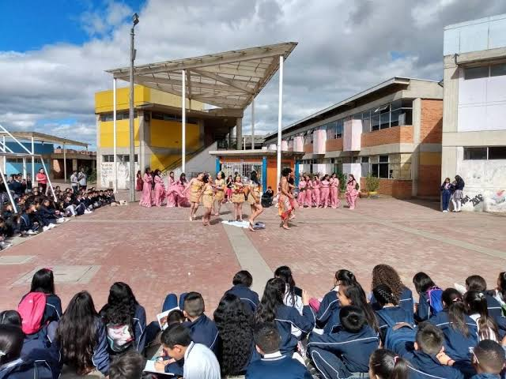

| Lugar | Característica |
|---|---|
| Parque de barras | Espacio recreativo para para desarrollar habilidades, divertirse y realizar actividad fisica para aereas deportivas o dinamicas |
| Cancha de futbol | Espacio amplio y libre para jugar diversos juegos en actividad fisica, como futbol, baloncesto, voleybol, y juegos de estrategia en momentos de descanso o en el aerea de educación fisica |
| Cancha de voleybo | Un comodo lugar para jugar voleybol, compartir con personas y distraerse en cambios de clase |
| Biblioteca | Un lugar perfecto para descansar, jugar juegos de mesa, leer o terminar algun trabajo pendiente |
| Caracol | Espacio comodo y seguro para elaborar actividades de clase de forma dinamica y libre |
| Mesas de pin pong | Un gran lugar para jugar algo nuevo y distraerse en momentos disponibles |